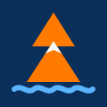

De la mer aux sommets
Cartes © IGN · SHOM — Météo : Météo-France, ECMWF via Open-Meteo
Aide à la navigation non certifiée : gardez les cartes officielles et la veille.
Heures et hauteurs au zéro des cartes, coefficients : prédictions officielles du SHOM pour le port choisi.
Faites glisser le doigt sur la courbe pour choisir l'heure : les flèches de la carte suivent. PM = pleine mer, BM = basse mer. Hauteur modélisée par rapport au niveau moyen (et non au zéro des cartes) : pour les hauteurs exactes, utilisez l'annuaire des marées SHOM.
Quand les modèles sont d'accord, la prévision est fiable. S'ils divergent, prudence.
Prévisions via Open-Meteo selon le modèle choisi (Météo-France AROME/ARPEGE, ECMWF, ICON, GFS) : vent, températures, pluie, neige et iso 0 °C. Pour le risque d'avalanche, consultez le bulletin de Météo-France (Menu).
Prévisions via Open-Meteo : vent et météo selon le modèle choisi (Météo-France AROME/ARPEGE, ECMWF, ICON, GFS), vagues, courant (Mercator, marée incluse) et hauteur d'eau modélisée. Maille de plusieurs km : recoupez avec les bulletins officiels et l'annuaire des marées SHOM.
Simulation indicative : vent du modèle choisi (Open-Meteo), maille de plusieurs km ; polaires types approximatives. Les courants côtiers forts (raz) sont mal représentés. Gardez votre sens marin.
Pour être réveillé : volume multimédia monté, téléphone branché et appli ouverte (« Garder l'écran allumé »). En mode silencieux, seule la vibration et la notification passent.
L'alarme sonne et vibre si le bateau sort du cercle, et prévient si le GPS ne répond plus. Rayon conseillé : longueur de chaîne + longueur du bateau. Faites glisser l'icône d'ancre si elle est tombée plus loin. Dans l'APK, la surveillance continue écran éteint ; dans le navigateur, gardez l'écran allumé.
Une seule trace pour tout : au-delà de 7 km/h, l'affichage passe en mode course (allure /km, temps de chaque km).
Touchez le profil pour situer le point sur la carte. Altitudes : IGN.
Gardez l'écran allumé pendant l'enregistrement : téléphone en veille, l'app ne reçoit plus le GPS.
Chaque couleur est une formation géologique. La légende détaillée de chaque feuille est sur infoterre.brgm.fr (toucher la carte à l'endroit voulu).
Pour naviguer sans réseau. Vos zones enregistrées : menu Plus › Cartes hors ligne.
Sans réseau, les cartes des zones téléchargées s'affichent normalement.
Relief IGN du massif (pas de 25 m environ) pour ouvrir la vue 3D sans réseau. La photo et la carte s'ajoutent en téléchargeant une zone.
Alerte si un navire doit passer à moins de 0,5 mille dans les 15 minutes. Ne remplace ni la veille ni un récepteur AIS.
En mer : les CROSS annoncent les bulletins et les BMS (avis de coup de vent) sur le canal 16 de la VHF.
Un seul fichier : réglages, repères, routes, traces, ancre.
Cartes : IGN et SHOM (visualiseur public). Météo : Open-Meteo. Ne remplace pas les cartes officielles à jour ni la veille visuelle.
Vent = prévision (pas d'anémomètre) ; vitesse sur l'eau = GPS corrigé du courant prévu. Indicatif : sert à voir si l'on est loin de la cible. Bateau : Plus › Routage.
Glisser : tourner · pincer : zoomer · deux doigts : déplacer · toucher : altitude
Relief, photo et carte © IGN · aucune aide à la décision en montagne